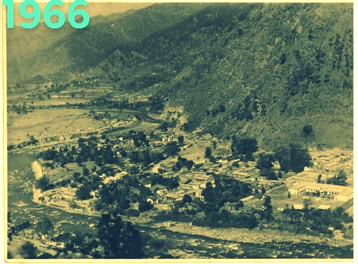
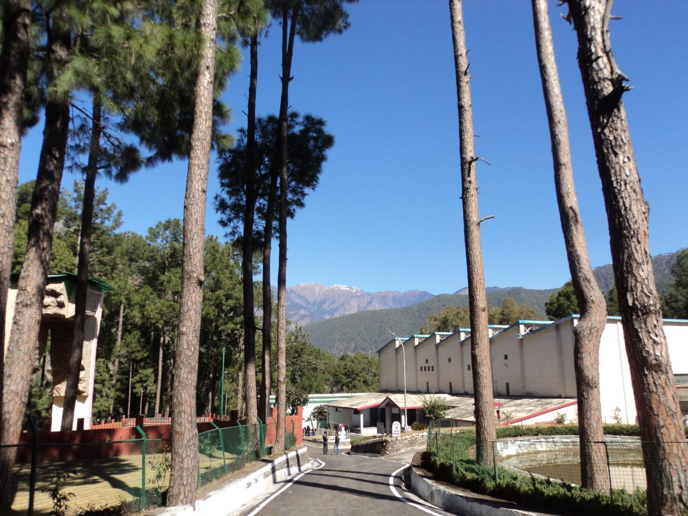
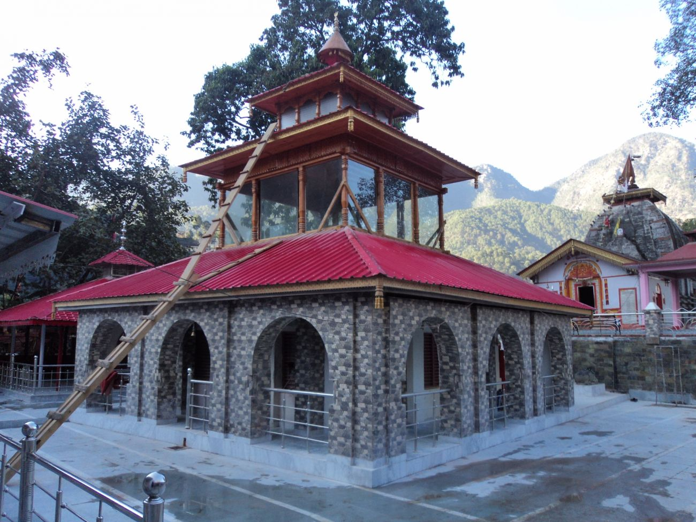

UTTARKASHI
Uttarkashi, meaning Kashi of the north, is a town in Uttarakhand, India. It is the district headquarters of Uttarkashi district. Uttarkashi is situated on the banks of river Bhagirathi at an altitude of 1158 m above sea level. Uttarkashi is generally known as a holy town close to Rishikesh. It is located in the state of Uttarakhand in India. Uttarkashi is home to a number of ashrams and temples and also to the Nehru Institute of Mountaineering. The name of the town reflects its similarity to and location (as north of) the city of Kashi (Varanasi). Similar to Varanasi, town of Uttarkashi is situated on the Ganges, lies next to a hill named Varunavat, on confluence of two rivers Varuna and Asi, has a ghat called Manikarnika Ghat and has a temple dedicated to Shiva similar to (Kashi Vishwanath Temple) in Varanasi , in the center of the town.

PLACES TO VISIT
Established in the year 1965, Nehru Institute of Mountaineering (NIM) is one of the premier mountaineering institutes in India. It conducts courses in Basic Mountaineering (BMC), Advance Mountaineering (AMC), Method of Instruction (MOI) and Mountain Search & Rescue (S&R) besides organizing climbing expeditions. Bachendri Pal, India's first woman to climb Mount Everest, is an alumnus of NIM.
Nanda Devi Institute of Adventure Sports and Outdoor Education (NDI) is the first private mountaineering institute certified by the Nehru Institute of Mountaineering to conduct courses in Basic Mountaineering, Rock Climbing and Search & Rescue.

NDI is located at village Kuflon, 11 kilometers upstream of Uttarkashi on the Sangamchatti road. NDI has another campus at village Lata on the periphery of Nanda Devi in the border district of Chamoli, where it is involved in the development and promotion of outdoor environmental education centric interpretative nature trail to Nanda Devi National Park.
Jamshedpur based Tata Steel Adventure Foundation (TSAF) runs its Himalayan outbound training programs from its Uttarkashi base camp located at Kuflon in the Assiganga Valley in Uttarkashi. TASF is an outbound leadership institute which through its wide range of activities aims at developing able leaders for the future through identificat mental and physical endurance. It allows people from all walks of life and all ar own metaphor for self-discovery. TASF is a popular experiential training institute among the corporate executives.
Dodital: One of the popular fresh water lake in Uttarkashi. 21 km trek to Dodital starts from Sangamchatti also known as Birth place of Lord Ganesha.
Kandar Devta Mandir
Kashi Vishwanath Temple

Ganga Kinare (bank of the Ganges)
Ujeli (constellation of sages): Ujeli is a neighborhood on the north of the town, where many ashrams are located.
Tiloth Power Plant: Located in Tiloth village at the fringe of Uttarkashi town; Stage 1 of Maneri Bhali hydroelectric project
Maneri Dam: Located at Maneri (15 km from Uttarkashi town); Stage 1 of Maneri Bhali hydroelectric project
Bhali Dam: Located in Joshiyara village at the lower fringe of the town. Stage 2 of Maneri Bhali hydroelectric project
Nachiketa Tal
Kuteti Devi temple: Located on a soss Bhagirathi River
Gynsu and Palla Gyansu: Old suburbs of Uttarkashi town, located en route to New Tehri
Joshiyara: A village across Bhagirathi River. Now becoming a neighborhood. It has a famous temple, Kaleshwar Mandir, dedicated to Lord Shiva.
Matndo-Tibetan Border Police is located here
Mahidanda: Another battalion of Indo-Tibetan Border Police is located here
Dayara Bugyal: Situated on 10,000ft hight, this alpine meadows is famous for its beautiful grazing pastures and home of many aromatic and wild flowers. Gujjar, the tribal population reside here for 6 month with their livestock. The place is ideal for trekking, hiking and camping in the lap of Himalaya, during winters this meadows also attract skiing lThe Year 2015 by State Govt of Uttarakhand.In June 2011, Department of science & Technology, DST with the Science communicator fellow Mr. Sanjay Kumar, P.G. College Uttarkashi have organized Hareet Pathshala (Green Classes) for the benefit of gujjar population reside with their families.Dayara is also famous for annual Butter Festival (Anduri Festival)organized by Angha Mountain organization and Hotel Association of Uttarkashi in month of August.
Adventure sports white water river rafting, Uttarkashi is known for its excellent trekking tracks and mountaineering.
contact: 9456300762
© copyright 2019

{kind=link}
{kind=link}
{kind=link}
{kind=link}
{kind=link}
{kind=link}
{kind=link}
{kind=link}
{kind=link}
{kind=link}